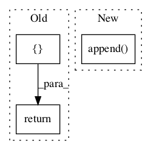

Pattern ID :134
Before Change
if line:
return [ (line[0], int(line[1]), tuple(line[2:])) ]
else:
return []
After Change
line = stream.readline()
if line == "": return entries // end of file.
pieces = line.split()
entries.append( (pieces[0], int(pieces[1]), tuple(pieces[2:])) )
return entries
In pattern: SUPERPATTERN
Frequency: 3
Non-data size: 3
Instances Fragment ID: 143447
Project Name: nltk/nltk
Commit Name: 2078d40d84d17569709b26d5c3bd568d539803df
Time: 2007-08-04
Author: edloper@ldc.upenn.edu
File Name: nltk/corpus/reader/cmudict.py
Class Name: AnonimousClass
Method Name: read_cmudict_block
Fragment ID: 143451
Project Name: nltk/nltk
Commit Name: 402aaa02060c1ece1f678fa179b38f4f1bff3bf6
Time: 2011-02-01
Author: peter.ljunglof@heatherleaf.se
File Name: nltk/tag/hunpos.py
Class Name: HunposTagger
Method Name: tag
Fragment ID: 143453
Project Name: nltk/nltk
Commit Name: 16a4e102530ec87cc5b70f32b2c02bf55947ccd0
Time: 2014-02-21
Author: stevenbird1@gmail.com
File Name: nltk/parse/projectivedependencyparser.py
Class Name: ProbabilisticProjectiveDependencyParser
Method Name: parse